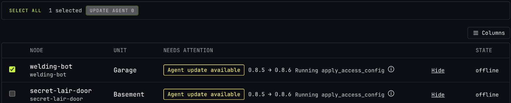
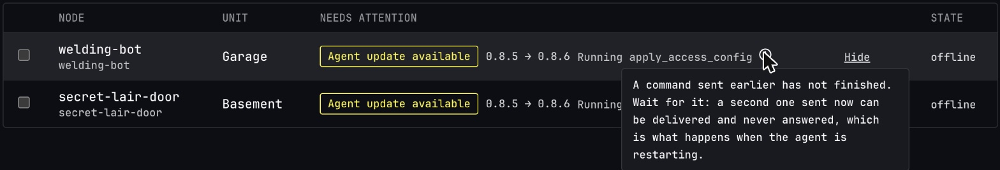

Backup, restore and upgrading the server
What a self-hosted server must keep safe, how restore and upgrade work in outline, and how agents on devices are updated from the UI.
This page is an operator's overview of keeping a self-hosted server recoverable and current. The commands live in the reference: BACKUP-RESTORE.md and INSTALL.md → Upgrading. Read them before you run anything.
What must be backed up
A database dump is not a backup on its own. Secrets, provisioning passwords, tracked files and command history are stored encrypted, and the keys sit beside the database. Keep all of these, paths as in the community compose file:
| Item | Where |
|---|---|
The bootloader signing key, privkey.pem | data/eeprom-keys/ |
The credential files, including secrets_encryption_key and db_password | secrets/ |
| The database | a nightly dump (below) |
The environment file: DOMAIN, PLATFORM_VERSION and your overrides | .env beside the compose file |
The bundled proxy's certificate store (only with the proxy-tls proxy) | data/proxy/acme.json |
Uploaded and captured OS images, and the agent releases the server hands to devices (agent-artifacts/) | data/backend/storage/, or your object-storage bucket |
| The key that encrypts your dumps | anywhere but the server |
Two files cannot be regenerated, and losing either is permanent:
secrets/secrets_encryption_key: without it every encrypted row is lost. The dump restores, and decrypts nothing.data/eeprom-keys/privkey.pem: its public half is baked into the bootloader of every device that boots from the network. Without it no rebuilt server can sign a boot image those devices accept, and recovery is a physical re-flash of each device.
Put both into an escrow you control, such as a password manager, on the day the server is created and before the first device is adopted. Keep the escrow separate from where the dumps go, so that neither store alone can read your data.
The nightly dump
The reference gives a complete script (A scripted nightly dump). It dumps the database and, separately, the database roles; compresses and encrypts both with a passphrase file you create once; checks that the result decrypts and holds a real dump before keeping it; and deletes dumps older than 14 days only after a good new one exists. Run it as root from a systemd timer or cron, then copy the newest dump off the host. The local copy protects you from a bad deletion, not from a lost disk. Images are large and not in the dump: sync the storage directory or bucket on its own schedule, or decide in writing that a lost host loses them.
Restoring
There are two procedures in the reference, and the order of steps matters in both.
- Into the same install, to undo a bad change or roll back an upgrade: stop the stack, put back the release and credential files that match the dump, move the current database directory aside, restore into an empty database, start, verify, and only then delete the old directory. Images and agent releases are not rolled back.
- Onto an empty host: prepare the host by hand with the same release and the same
DOMAIN, not with the installer, which would create new keys and a new owner. Put every key in place before the backend starts for the first time, then restore roles, data and storage.
After a restore, the backend log must not contain ENCRYPTION KEY MISMATCH; the reference ends with a checklist.
Devices reconnect on their own, with no re-adoption, when the restored server keeps the same name and the same keys: their adoption files name the server, and their bootloaders trust its signing key. A new name or a new signing key means re-baking each network-booting device.
A dump from an older release restores onto a newer one and is upgraded on start. A dump from a newer release is refused by an older one, which exits without touching the database.
Upgrading the server
The full procedure is INSTALL.md → Upgrading. In short:
- Read the changelog.
CHANGELOG.mdlists, for every release between yours and the new one, new settings, changed defaults and what the upgrade does to existing data. - Back up. Run the dump once by hand and check that your copies of
secrets/and.envare current. Rolling back means restoring this dump. - Get the new release's files in the install directory (
git checkout platform-v<new>, or unpack the release archive), compare the compose file with the old one, and create any new credential file it names. - Set
PLATFORM_VERSIONin.envto the new release. - Pull and start:
docker compose -f docker-compose.community.yml pull, thenup -d, then check that every container is up and the backend did not refuse to start.
Two rules from the reference:
- There is no downgrade across a schema change. The backend migrates the database on start, and an older backend refuses a database a newer one has migrated: the web page still loads, but every request fails until you roll forward or restore the backup from step 2.
- The images and the compose file move together. Never run one release's images with another release's compose file.
The web UI does not display the platform version. PLATFORM_VERSION in .env is the authority.
Updating agents on devices
Agents are updated from the server, never with the device's package manager. The server serves the newest agent release it has imported (see "Import an agent release" in INSTALL.md); importing a new release is an operator step on the server.
One node. Open the node and look at the Agent row on Overview. It shows the running version and either up to date or an Update button. Update works only while the node is online. It asks "Update the agent on this node to the latest version (…)? The agent downloads it from the server and restarts."

Many nodes. Status → Attention has the condition Agent update available, which shows the step, for example "0.8.5 → 0.8.6". Select the rows (or Select all) and click Update agent. Each node installs the newest release, and a node that is away gets it when it returns. The number on the button is how many of the selected nodes it will actually send to.

A node that still has an unfinished command is held back, which is why the button above says 0. Its row shows the command name and an ⓘ that explains the hold:

After a platform upgrade, some actions can require a newer agent; such a command is refused, or skipped if it was queued, until you update the node. Moving a node back to an older agent is not offered in the UI; the reference explains the API call.